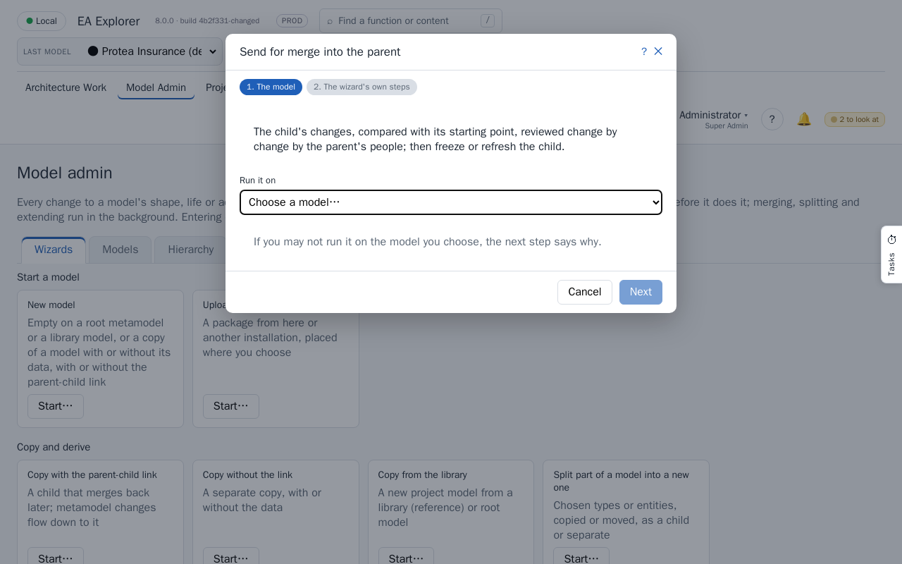

Send a child model for merge
For: Model Admin, Practising architects
Send the child's changes to the parent's admins to review.

#/model-admin/wizards?wizard=sendWhy do this
When work in a child model is ready, sending it for merge shows the parent's admins what changed and asks them to review. See Versions, tags and merging.
Nothing in EA Explorer is lost: every change is kept, moments can be named, and work can happen in copies that merge back after review. This is what lets many people change one model without fear.
In TOGAF terms: Phase H and the Architecture Repository: change to the baseline is controlled, recorded and reversible. See EA Explorer and the TOGAF Standard.
The goal: A child's work goes to the parent's admins to review.
Before you start You need the Model Admin role on the model. (on the child)
Steps
- Open Model Admin › Wizards, Send for merge into the parent, and pick the child.
- See the preview of the changes; add a note for the reviewers.
- Send.